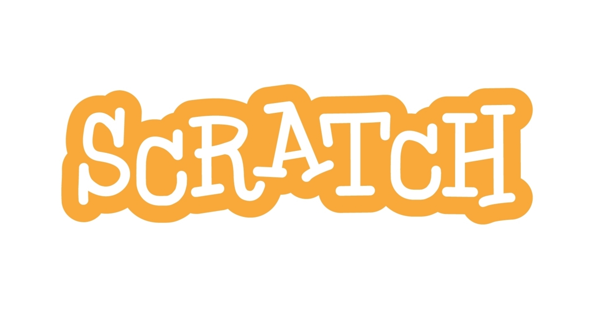

What is Scratch?

Of course, if I am doing a website all about Scratch projects, it begs the question; What is Scratch? Well, according to Scratch itself,
With Scratch, you can program your own interactive stories, games, and animations — and share your creations with others in the online community.
Scratch helps young people learn to think creatively, reason systematically, and work collaboratively — essential skills for life in the 21st century.
Scratch is designed, developed, and moderated by the Scratch Foundation, a nonprofit organization. It is provided free of charge.
Simply speaking, Scratch is used to create projects like games and animation. Scratch is a simple software, not exactly able to create high-end games like Minecraft or Fortnite, but one of the arguably most complicated game ever made on Scratch was made by a user named griffpatch,m who created a 2D sandbox version of minecraft.
However, assuming you have good artistic skills and enough skills in programming, you can easily create a simplistic cartoonish animation. Now, click this to go back to the menu or you know, just chill at this page.